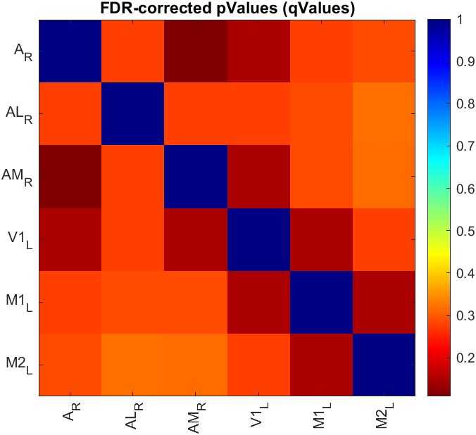

The umIToolbox performs hypothesis testing for comparisons on two types of data: scalar (i.e. single values) and correlation matrices. The idea behind the statistical testing is to assess differences between experimental groups with an exploratory approach. This means that we have chosen tests, in particular post hoc multiple comparisons, that are less strict when rejecting the null hypothesis. Thus, this approach has the advantage of increasing the probability of detection of significant differences between experimental groups. On the other hand, this may also increase the probability of false positives (i.e. type I error). Given that, if your project has other needs in terms of statistical analysis, it is advisable to perform the necessary statistical comparisons outside the toolbox.
Our toolbox performs statistical comparisons using the available functions with Matlab's Statistics and Machine Learning Toolbox. The functions are listed in the table below(click on the respective link for details).
How the tests are chosen
The toolbox chooses the statistical test depending on the data validation criteria (see next section) and on how the data is organized. For instance, if the data is organized as two experimental groups as a function of time (i.e. acquisitions), a Two-Way Repeated Measures ANOVA will be performed. In contrast, for data from a single experimental group separated into two acquisitions, a paired two-sampled test will be used.
| Function name | Usage |
|---|---|
| ttest | Paired two-sampled T-test |
| signrank | Non-parametric Wilcoxon signed rank test for paired two-sampled data |
| ttest2 | T-test for independent two-sampled data |
| ranksum | Non-parametric Wilcoxon rank sum test for independent two-sampled data |
| anova1 | One-way analysis of variance |
| kruskalwallis | Kruskal-Wallis Test. Non-parametric version of the classical One-way ANOVA |
| anovan | N-way analysis of variance. Used to perform Two-Way ANOVA. |
| ranova | Repeated measures (rm) analysis of variance. Used to analyse One and Two-way rmANOVA |
Note
Multiple comparisons after ANOVA are performed using Matlab's multcompare function. Different methods
are using depending on the data type. For scalar data, we use the Dunn & Sidák's approach
while for correlation matrices, we use the Fisher's least significant
difference procedure.
Before the execution of statistical tests, we test if the data follows a normal distribution and, for Two-Way ANOVA and Repeated Measures, we also check if the variances are roughly equal.
For each group of data, the normality is tested using the Lilliefors test statistic (click here for details). If allgroups of data are normally distributed, the algorithm will use the parametric tests. In contrast, if one or more groups are not normally distributed, non-parametric versions will be used instead.
Important
Non-parametric versions of Two-Way ANOVA and Repeated Measures ANOVA tests are currently
unavailable. Therefore, if the data is not normally distributed, no statistical test will be performed.
This parameter applies to ANOVA only. Given that homoscedascity (i.e. homogeneity of variances) is one of the assumptions considered for ANOVA tests, we test for this as well. However, in our case, we use a very "loose" criterion where we consider heterogeneous variances only if the ratio of the largest to the smallest variance exceeds 4:1 (from S. McKillup, 2011).
Important
Differently from the test for normal distribution, if the data fails the test for homogeneous variances, a
warning message will be issued and the ANOVA tests will be executed. Just, be mindful that if this
assumption was violated, caution must be taken when interpreting the results!
Although sphericity is an important assumption for rmANOVA, the toolbox does not use this criterion to decide wether or not to perform statistical comparisons. Instead, the sphericity is automatically tested during the analysis. If the criterion is violated, then a "corrected" p value is used.
The rmANOVA function ranova provides the "uncorrected" p value as well as a set of p values corrected for sphericity violation. In our case, we use the Greenhouse-Geisser corrected p value (pValueGG) as a significance threshold for data that violate the sphericity assumption. Thus, during the calculations, our algorithm decides which p value to use as threshold to decide to perform post hoc tests. The chosen p value is displayed in the ANOVA table(s) in the stats report.
The results of the statistical comparisons are summarized in text format. Here is an example:
-----------------------Statistical Hypothesis test report-----------------------
Run date: 01-Feb-2023 12:29:03
The data was grouped by 4 Acquisition(s) vs 1 Group(s) and split by a total of 6 ROI(s).
The hypothesis test executed was "OneWayRepeatedMeasures"
--------------------------------------------------------------------------------
Subgroup name: A_R
Comparison performed: "Group by Acquisition"
Stats:
| SumSq | DF | MeanSq | F | pValueGG
-----------------------------------------------------------------------------------
(Intercept):Acquisition | 19272503.2471 | 3 | 6424167.749 | 24.7977 | 0.1023
Error(Acquisition) | 2331566.1496 | 9 | 259062.9055 | 1 | 0.5
-----------------------------------------------------------------------------------
--------------------------------------------------------------------------------
Subgroup name: AL_R
Comparison performed: "Group by Acquisition"
Stats:
| SumSq | DF | MeanSq | F | pValueGG
----------------------------------------------------------------------------------
(Intercept):Acquisition | 9457407.259 | 3 | 3152469.0863 | 31.7015 | 0.0025141
Error(Acquisition) | 894981.2687 | 9 | 99442.3632 | 1 | 0.5
----------------------------------------------------------------------------------
Post hoc tests:
Test name: "dunn-sidak"
Group | Acquisition_1 | Acquisition_2 | Difference | StdErr | pValue | Lower | Upper
------------------------------------------------------------------------------------------------------
Test | 1 | 2 | -822.7637 | 261.2608 | 0.27091 | -2438.6161 | 793.0887
Test | 1 | 3 | -1652.4593 | 303.8789 | 0.071054 | -3531.8975 | 226.979
Test | 1 | 4 | -1979.2164 | 155.2347 | 0.0062294 | -2939.3159 | -1019.1169
Test | 2 | 1 | 822.7637 | 261.2608 | 0.27091 | -793.0887 | 2438.6161
Test | 2 | 3 | -829.6956 | 115.468 | 0.032866 | -1543.8449 | -115.5462
Test | 2 | 4 | -1156.4527 | 198.7203 | 0.05911 | -2385.5035 | 72.5981
Test | 3 | 1 | 1652.4593 | 303.8789 | 0.071054 | -226.979 | 3531.8975
Test | 3 | 2 | 829.6956 | 115.468 | 0.032866 | 115.5462 | 1543.8449
Test | 3 | 4 | -326.7571 | 246.5909 | 0.85719 | -1851.8788 | 1198.3646
Test | 4 | 1 | 1979.2164 | 155.2347 | 0.0062294 | 1019.1169 | 2939.3159
Test | 4 | 2 | 1156.4527 | 198.7203 | 0.05911 | -72.5981 | 2385.5035
Test | 4 | 3 | 326.7571 | 246.5909 | 0.85719 | -1198.3646 | 1851.8788
------------------------------------------------------------------------------------------------------
--------------------------------------------------------------------------------
The report consists of a first section containing basic information about the data and the type of statistical comparison (e.g. OneWayRepeatedMeasures). The other sections are separated by subgroups. In the example above, the data of each "ROI" was analysed separately. The content of each section varies depending on the test applied. In the example above, the ANOVA table is shown under the "Stats:" section for the first subgroup. As for the second one, the results of the post hoc test are shown given that "significant" differences were detected in the ANOVA test.
Hypothesis testing of correlation matrices are performed differently than the scalar data. In this case, each pair of ROIs is treated as an unique data. The data from each pair is then analysed as it were scalar using the statistical functions listed in the table above. The difference here is that we apply a False Discovery Rate (FDR) correction to the p values obtained from the comparisons. The idea behind this is to exclude false positives (i.e. type I error) due to the multiplicity of pair-wise comparisons.
When available, all comparisons will use non-parametric tests regardless of the normality of the data. For two-sampled data (unpaired and paired), the p values of the hypothesis tests from all pairs of ROIs are FDR-corrected (also named as q values) and displayed as a matrix (see example below). The FDR algorithm used here is the one developed by Benjamini and Hochberg [2]).

For ANOVA tests, the procedure is similar but with an extra step. First, the p values of the ANOVA tests are FDR-corrected. Then, only the pairs of ROIs with FDR-corrected values ≤ 0.05 are considered for post hoc testing.
The post hoc test method used for correlation matrix is the Fisher's least significant difference ("lsd") followed by the FDR-correction of the p values from the post hoc tests (procedure inspired by [3])
Note
The statistical report is available only for ANOVA tests where post hoc tests were generated. If the data is two-sampled or no pairs of ROIs yielded FDR-corrected p values ≤ 0.05, only the matrix (as the figure above) is available.